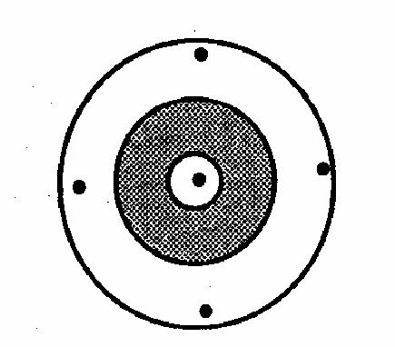

Error in Clinical Research
Lead Author(s): Jeff Martin, MD
Missing the Truth
What are the ways of missing the truth (ie getting the wrong answer)? There are two main ways:
Bias or Systematic Error
Systematic error is also known as bias.
- It is any systematic process in the conduct of a study that results in the incorrect estimate of a measure of disease occurrence or measure of association.
Because it is a systematic process, it will cause a distortion from the truth in a predictable (not random) direction. We say that the amount of systematic error is captured in the validity of the inference.
Random Error
In distinction to systematic error, random error occurs because we cannot sample everyone in our studies;
- we are always forced to just sample a fraction of the source population.
Just by chance alone we might draw a sample that is not representative of the source population.
- That is why random error is synonymous with chance and the direction of the error is random and not predictable.
- We say that random error is captured in the precision of the estimate and is usually described in the standard error or confidence interval of our estimate.
Diagram - Typical Study
When you perform a study you typically just have one shot, as diagrammed below, and you don't know where the center of the target is.

The field of statistics can tell you the random error of your one shot, with definite formulae for confidence intervals, but cannot tell you anything about how close you are to the center.
- It is really only your judgment and the judgment of other scientists who review your work that can help you guess about systematic error.
- It is really only the person who has both content matter knowledge of the clinical or biological problem as well as methodological knowledge of the clinical research (ie you) who can make the best guess about systematic error.